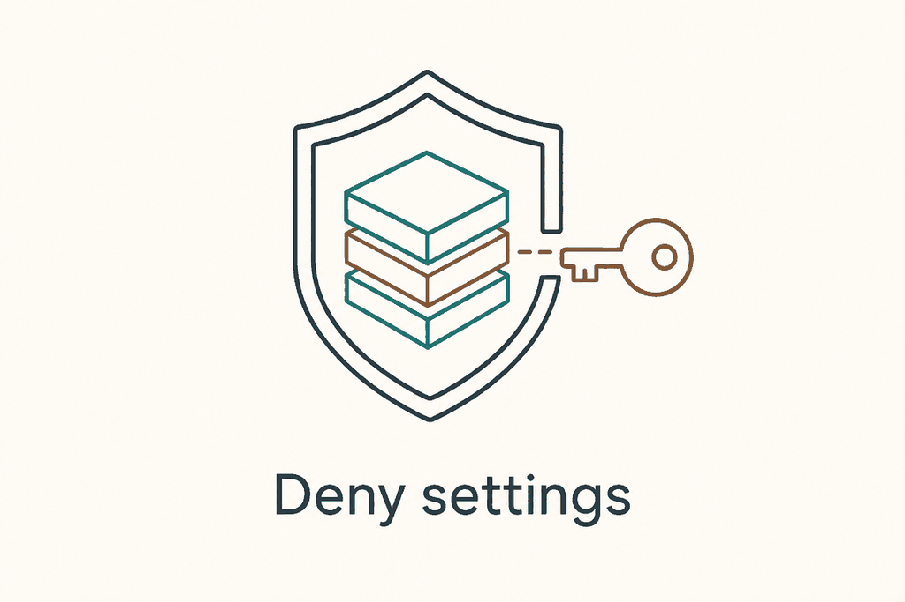
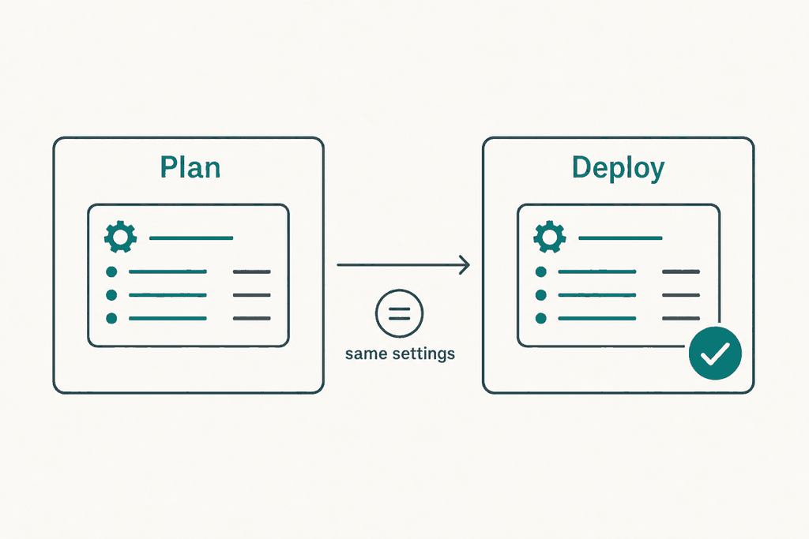

Plan: Stack deny settings, description and tags (#55)

Purpose
Let a stack deployment set the deny-settings exclusions (principals and actions), apply deny settings to child scopes, and set a stack description and tags. The settings must be recorded in the plan, enforced at deploy, and shown in the PR comment, like every other setting that changes what gets deployed. Defaults must reproduce today's behaviour exactly. See docs/adr/0002-stack-deny-settings.md for the decision record.
Problem
Today scripts/az-deploy.sh passes only --action-on-unmanage and --deny-settings-mode to az stack (the common array, line 382). denyWriteAndDelete then also blocks break-glass accounts and any platform pipeline that writes to the managed resources, so few teams can turn it on. The stack description and tags cannot be set. The plan/deploy contract (check_plan_settings, line 306) compares one string, stack;id=...;unmanage=...;deny=... (line 384), so any new setting that is not added to that string would be applied at deploy without having been planned.
Solution
Five optional inputs (stack_deny_settings_excluded_principals, stack_deny_settings_excluded_actions, stack_deny_settings_apply_to_child_scopes, stack_description, stack_tags) and their Azure DevOps variables. A new sourced helper, scripts/stack-settings.sh, parses and validates them, normalises them (sorted, lower-case GUIDs), builds the az stack arguments and extra stack_settings segments. The segments are appended only when a setting is non-default, so the default string is unchanged and old plans still match. The deploy recomputes the string, fails on a mismatch naming the differing fields, and after creating the stack reads it back and checks the stored deny settings. The PR comment gains one line, only when a new setting is used.

Exact CLI facts (Azure CLI 2.87.0, az stack {group|sub|mg} create --help)
| Flag | Shape | Constraint |
|---|---|---|
--deny-settings-excluded-principals / --ep | list of AAD object IDs | Up to 5 |
--deny-settings-excluded-actions / --ea | list of RBAC operations | Up to 200 |
--deny-settings-apply-to-child-scopes / --cs | boolean flag, no value | Present at group, sub and mg |
--description | string | None stated by the CLI |
--tags | space-separated key[=value]; '' clears existing tags | Applied to the stack resource, not to the resources it manages |
Not verifiable here: az stack-whatif is not a recognised command in the installed CLI (2.87.0), although the script gates on it (az stack-whatif --help, line 346). Which flags it accepts is therefore confirmed in phase 1.
Relevant Files
Existing Files
- existing
scripts/az-deploy.sh— stack block (lines 273 to 535):stack_fail(295),check_plan_settings(306),deny=(352),common=(382), settings string (384),stack_whatif_gate(388), summary linehead=(452),write_summarycall withstackSettings(~468),az stack create(526), deployed message (528). - existing
.github/actions/plan/action.yml— inputs (line 52 area) and theWhat-ifstep env (line 224 onward). - existing
.github/actions/deploy/action.yml— inputs (line 42 area) and theCreate deploymentstep env (line 175 onward). - existing
.azuredevops/templates/plan-stage.yml—SCRIPTSdownload list (line 76 onward). Stack variables arrive as environment variables from pipeline variables, so no per-variable change. - existing
.azuredevops/templates/deploy-stage.yml—SCRIPTSdownload list (line 91 onward);PLAN_STACK_SETTINGSmapping (line 73) is unchanged. - existing
.azuredevops/ms.azure.deploy.yml— twoSCRIPTSlists (lines 87 and 312 onward) and thevariables:block (line 12 onward) for commented examples. - existing
scripts/pr-comment.sh— reads everystep_*.md, so the new comment line needs no change here; checked, not edited. - existing
docs/configuration.md— table lines 45 to 49, stack sections 123 to 166, output table line 262, defaults table line 289. - existing
docs/how-it-works.md— settings bullet line 103, deny bullet line 164, summary JSON example lines 276 to 296. - existing
docs/troubleshooting.md— rows at lines 12 and 52. - existing
docs/examples/README.md,docs/examples/github/recommended.yml— index row and a commented hint.
New Files
- new
scripts/stack-settings.sh— sourced helper:parse_stack_settings,describe_stack_settings,settings_diff. No side effects on source. - new
tests/stack-settings.test.sh— plain bash test cases for the helper (no new test framework; the repo has none). - new
docs/examples/github/deny-write-and-delete.yml—denyWriteAndDeletewith an excluded pipeline principal. - new
docs/examples/azure-devops/deny-write-and-delete.yml— the same for Azure DevOps.
Implementation Phases
IMPORTANT: Execute every phase and task step by step, in order, top to bottom.
Status markers: [] idle · [wip] in progress · [x] complete · [f] failed. All start as []; the Build Plan workflow updates them as it works.
[] Phase 1: Spike the real CLI behaviour
Settle the facts the design rests on, with a throwaway resource group, before writing code. Use a newer Azure CLI than 2.87.0 if needed, because az stack-whatif is missing from it.
1. Confirm flag behaviour
[]Find an Azure CLI that hasstack-whatif(az upgrade, or the hosted runner image) and record its version in the ADR.[]Runaz stack-whatif group create --help | grep -E "deny-settings|description|tags"and record which flags it accepts. This decides whetherstack_whatif_gatepasses the exclusions (probe) or leaves them out.[]Create a stack at group scope with--deny-settings-mode denyWriteAndDelete --deny-settings-excluded-principals ID1 ID2 --deny-settings-excluded-actions A1 A2 --deny-settings-apply-to-child-scopes --description "x" --tags a=1 b=2. Check the list arguments are accepted as separate words and not only as one quoted string (the CLI help example quotes"test1 test2").[]Runaz stack group show -n NAME -g RG -o jsonand record the exact paths for deny mode, principals, actions, child scopes, description and tags (expected.properties.denySettings.*,.properties.description,.tags). Phase 3 verification reads these.[]Repeat the create at sub and mg scope. Record whether child scopes behave differently, and whether the stack's own deploying identity needs to be excluded to update or delete the stack later.[]Update the stack with no--tagsand no--description: record whether existing tags and description are kept or cleared. This defines what "default reproduces today" means for a stack that already has them.
2. Testing Strategy
Observation only; results go into the ADR as a short "Verified behaviour" list and change the plan where they contradict it.
[]az stack group delete -n NAME -g RG --action-on-unmanage deleteAll --yes— the spike stack and resource group are removed.[]git diff --stat docs/adr/0002-stack-deny-settings.md— verified facts are written back.
[] Phase 2: The settings helper
All parsing, validation and normalisation in one sourced file, so GitHub and Azure DevOps share it and it can be tested without Azure.
1. Create scripts/stack-settings.sh
[]Header and licence lines as inscripts/bicep-version.sh. Noset -eand no output when sourced.[]parse_stack_settings: readsDENY_MODE(argument 1) and the fiveSTACK_*variables. On success it setsSTACK_EXTRA_ARGS(array),STACK_EXTRA_SEGMENTS(string, empty by default),STACK_EXTRA_JSON(object for the summary file) andSTACK_EXTRA_TEXT(comment line, empty by default). On failure it setsSTACK_SETTINGS_ERRORand returns 1.[]List fields: split on commas, spaces and newlines (tr '[:space:],' '\n'), drop empties, de-duplicate, sort. Principals: lower-case, match^[0-9a-f]{8}-[0-9a-f]{4}-[0-9a-f]{4}-[0-9a-f]{4}-[0-9a-f]{12}$, at most 5. Actions: match^[A-Za-z0-9._-]+(/[A-Za-z0-9._*-]+)+$, at most 200.[]Child scopes: accepttrue/falsein any case (empty isfalse); anything else is an error. Pass--deny-settings-apply-to-child-scopesonly fortrue.[]Tags: if the trimmed value starts with{, parse withjq -e 'type=="object"'and turn each value into a string; otherwise read onekey=valueper line (a value may hold spaces and commas, a key may not hold=). At most 50 tags, key at most 512 and value at most 256 characters. Sort by key. Each tag becomes one array elementkey=valueafter--tags, so spaces survive.[]Description: trim, one line only, at most 512 characters (a limit of our own, stricter than Azure's; see Questionables).[]Reject any value containing a run of three or more*(a masked secret) with a message that says the settings must not come from secrets.[]IfDENY_MODEisnoneand any of principals, actions or child scopes is set, fail: "Deny settings exclusions need a deny mode other than none." Description and tags are allowed withnone.[]Segments, appended only when non-default, always in this order:;excludedPrincipals=id1,id2·;excludedActions=N:HASH·;childScopes=true·;tags=N:HASH·;description=HASH.HASHis the first 12 hex characters of the SHA-256 of the sorted, newline-joined (or canonicaljq -S -c) value; usesha256sumwith ashasum -a 256fallback.[]settings_diff PLANNED CURRENT: split both on;, compare key by key, print one line per difference, for exampleexcludedPrincipals: planned (none), now id1. Used for the mismatch message.
# parse_stack_settings sketch (the non-obvious parts)
split_list() { tr '[:space:],' '\n\n\n' <<< "${1-}" | sed '/^$/d' | sort -u; }
hash12() { { sha256sum 2>/dev/null || shasum -a 256; } | cut -c1-12; }
parse_stack_settings() {
STACK_EXTRA_ARGS=(); STACK_EXTRA_SEGMENTS=''; STACK_SETTINGS_ERROR=''
local mode="${1}" principals actions
principals=$(split_list "${STACK_DENY_SETTINGS_EXCLUDED_PRINCIPALS-}" | tr '[:upper:]' '[:lower:]' | sort -u)
if test -n "${principals}"; then
[ "$(wc -l <<< "${principals}")" -le 5 ] || { STACK_SETTINGS_ERROR='At most 5 excluded principals are allowed.'; return 1; }
# each line must match the GUID regex, else error naming the bad value
mapfile -t pl <<< "${principals}" # bash 4; the runner and AzureCLI@2 have it
STACK_EXTRA_ARGS+=(--deny-settings-excluded-principals "${pl[@]}")
STACK_EXTRA_SEGMENTS+=";excludedPrincipals=$(paste -sd, - <<< "${principals}")"
fi
# ... actions, child scopes, tags, description likewise
}ubuntu-24.04 and the Azure DevOps ubuntu-latest image both have bash 5, so mapfile is fine. A self-hosted macOS agent with bash 3.2 would not run it; use a while read loop instead of mapfile to stay portable.2. Create tests/stack-settings.test.sh
[]A tinyassert_eqandassert_failin the file, then cases: empty input gives empty segments and empty args; principals in mixed case with duplicates normalise to one sorted list; 6 principals fail; a non-GUID fails; 201 actions fail; a malformed action fails; tags as JSON and as lines give identical args and identical hash; two orderings of the same input give identical segments;***in any field fails;noneplus principals fails;noneplus tags passes;settings_diffnames exactly the differing keys.
3. Testing Strategy
Pure shell, run on the dev machine and in CI by hand (the repo has no test workflow; adding one is out of scope).
[]shellcheck scripts/stack-settings.sh tests/stack-settings.test.sh— no findings (the repo already uses shellcheck directives such as# shellcheck source=).[]bash tests/stack-settings.test.sh— all cases pass.[]env -i bash -c 'source scripts/stack-settings.sh; parse_stack_settings none; echo "[${STACK_EXTRA_SEGMENTS}] ${#STACK_EXTRA_ARGS[@]}"'— prints[] 0: the default path adds nothing.
[] Phase 3: Wire the helper into scripts/az-deploy.sh
All five behaviours (arguments, record, enforce, show, verify) are in one script that both platforms run. The edits stay inside the stack block, after deny= is read (line 352).
1. Parse and build arguments
[]Near the top of the stack block, source the helper likebicep-version.shis sourced:source "$(dirname "${BASH_SOURCE[0]}")/stack-settings.sh"with the# shellcheck source=stack-settings.shdirective.[]Afterdeny="${STACK_DENY_SETTINGS_MODE:-none}"(line 352):parse_stack_settings "${deny}" || stack_fail "${STACK_SETTINGS_ERROR}".stack_failalready writes the.md, so the PR comment shows the reason and the job exits 1 before any Azure call.[]Keepcommon(line 382) exactly as it is. Addextra=("${STACK_EXTRA_ARGS[@]}")and use it in theaz stack "${stack_scope}" createcommand (line 526):... "${common[@]}" "${extra[@]}" "${stack_args[@]}" --yes.[]Forstack_whatif_gate(line 396): pass only the deny flags, and only if the Phase 1 spike showedaz stack-whatifaccepts them. Buildwhatif_extraby probing:az stack-whatif "${stack_scope}" create --help 2>/dev/null | grep -q -- '--deny-settings-excluded-principals'. Description and tags are never passed to what-if (they do not change resource changes).
2. Record in the plan
[]Change line 384 tocheck_plan_settings "stack;id=${stack_id};unmanage=${unmanage};deny=${deny}${STACK_EXTRA_SEGMENTS}". With defaultsSTACK_EXTRA_SEGMENTSis empty, so the string is identical to today's.[]In thewrite_summarycall (line ~468) merge the new object into--argjson settings:jq -n --arg u ... --arg d ... --argjson x "${STACK_EXTRA_JSON}" '{actionOnUnmanage: $u, denySettingsMode: $d} + $x'.STACK_EXTRA_JSONis always an object withexcludedPrincipals: [],excludedActions: [],applyToChildScopes: false,description: null,tags: nullby default, so the shape is stable.
3. Enforce at deploy
[]Incheck_plan_settings(line 306), keep the whole-string comparison and its existing message prefix (the troubleshooting row matches on it). Append the diff:stack_fail "The deployment settings (${current}) differ from the settings the plan used (${planned}). Run the plan again with the settings you deploy with." "$(settings_diff "${planned}" "${current}")".stack_failtakes a second argument already (line 295).[]The existing branch at line 322 ("A stack deployment needs the settings the plan used") needs no change;[ "${current}" != 'deployment' ]still holds.[]Verify after create. Following theaz stack createcommand (line 526), read the stack back and compare with the intended values, using the paths recorded in Phase 1:az stack "${stack_scope}" show --name "${stack_name}" "${scope_args[@]}" -o json. Compare sorted principals, sorted actions, child scopes and deny mode. On a difference callstack_fail "Azure stored different deny settings than requested."with the diff. A failedshowis a warning, not a failure, because the deployment itself succeeded.
4. Show in the PR comment
[]Line 452: leavehead=unchanged and append${STACK_EXTRA_TEXT:+${nl}${nl}${STACK_EXTRA_TEXT}}tobody(line ~496).STACK_EXTRA_TEXTis empty by default, so existing comments are byte-identical. Format:**Deny settings:** `denyWriteAndDelete`; excluded principals: `id1`, `id2`; excluded actions: 3; child scopes: yes. **Description:** ... **Tags:** `a=1`, `b=2`.List actions in a<details>block when more than 5.[]Line 528 ("Stack ... deployed"): append the sameSTACK_EXTRA_TEXTso the deploy comment repeats what was enforced.[]Never print the settings withset -xor--debug;IN_SEVERITY=DEBUGonly adds--debugto the classic command (line 574), not to the stack commands, so no change is needed. Confirm by reading the file.
5. Testing Strategy
Static checks plus a dry run that stubs az with a shell function, so the argument list and the settings string can be asserted without Azure.
[]shellcheck scripts/az-deploy.sh— no new findings against the current baseline (run it onmainfirst and diff).[]Defaults: run withDEPLOYMENT_MODE=stack SCRIPT_ACTION=createand a stubazthat prints its arguments; diff the printedaz stack ... createline and thestack_settingsoutput against the same run onmain. They must be identical.[]Non-default: setSTACK_DENY_SETTINGS_MODE=denyWriteAndDelete, two principals, one action, child scopes, a tag. Assert the printed command has each flag once and the settings string ends in the expected segments.[]Mismatch: plan with one principal, deploy with another; assert exit 1 and a message namingexcludedPrincipals. Same for a changed tag and a changed description.[]Old plan, new deploy with no new inputs: setPLAN_STACK_SETTINGSto the exact pre-change string; assert the deploy passes the check.[]Masked value:STACK_TAGS='k=***'; assert the job fails and the.mdand log do not contain the value.[]jq -e '.stackSettings.excludedPrincipals | type=="array"' $LOG_PATH/whatif-summary.json— the summary file has the new shape in both default and non-default runs.
[] Phase 4: GitHub actions
Expose the five inputs on both composite actions and pass them to the script as environment variables. Plan and deploy must define identical inputs.
1. Inputs and env
[]In.github/actions/plan/action.yml, afterstack_deny_settings_mode(line 52), add the five inputs, eachrequired: false, defaults""except child scopes"false". Description text must state the format and the limits (5 principals, 200 actions, one-line description, 50 tags), and that values are shown in the PR comment, so they must not be secrets.[]Same five inputs in.github/actions/deploy/action.ymlafter line 42, with the same text.[]In the planWhat-ifstep env (after line 239) and the deployCreate deploymentstep env (after line 188) addSTACK_DENY_SETTINGS_EXCLUDED_PRINCIPALS: ${{ inputs.stack_deny_settings_excluded_principals }}and the four others. Multi-line values are safe in env.[]Update the descriptions ofplan_stack_settings(deploy, line 47) andstack_settingsoutput (plan, line 125) to say they cover the deny exclusions, description and tags.
2. Testing Strategy
[]python3 -c "import yaml,sys; [yaml.safe_load(open(f)) for f in sys.argv[1:]]" .github/actions/plan/action.yml .github/actions/deploy/action.yml— both parse (useuv run --with pyyamlif PyYAML is missing).[]actionlint .github/actions/*/action.yml docs/examples/github/*.ymlwhere actionlint is installed (it is not on the dev machine; install withbrew install actionlint), otherwise skip and say so.[]diff <(yq '.inputs | keys' .github/actions/plan/action.yml | grep stack) <(yq '.inputs | keys' .github/actions/deploy/action.yml | grep stack)— plan and deploy expose the same stack inputs, exceptplan_stack_settings(deploy only). Skipyqlines ifyqis absent and compare by eye.
[] Phase 5: Azure DevOps
Azure DevOps exposes pipeline variables as environment variables, which is how STACK_NAME and STACK_DENY_SETTINGS_MODE already reach the script (no STACK_* entry exists in the templates). So the new variables work without YAML wiring. What changes is that the new helper script must be downloaded, because each stage fetches its scripts by name.
1. Script lists and variables
[]Add"stack-settings"to theSCRIPTSlist in.azuredevops/templates/plan-stage.yml(after"psrule-report", line ~90) and.azuredevops/templates/deploy-stage.yml(line ~97). Keep alphabetical-or-existing order; the helper is sourced from the same directory asaz-deploy.sh, so the download directory matches.[]In.azuredevops/ms.azure.deploy.ymladd"stack-settings"to both lists (plan job near line 93, deploy job near line 318).[]Inms.azure.deploy.ymlvariables:add the five as commented examples underDEPLOYMENT_MODE(line 17), in the style of theEXISTING_TAGS_KEYScomment: a one-line explanation each. A block scalar (value: |) shows the multi-line form for principals.[]Check.azuredevops/README.md(parameters table, line 30) and add one sentence that the new variables are read from pipeline variables.[]Confirm there is nothing to do indeploy-stage.ymlline 73:PLAN_STACK_SETTINGSis the plan job'swhat_if.stack_settingsoutput and now carries the segments. Because the output is a single-line variable, the helper must never emit a newline into the string (descriptions are single line by validation; tags and actions are hashed).
2. Testing Strategy
[]python3 -c "import yaml; [yaml.safe_load(open(f)) for f in ['.azuredevops/ms.azure.deploy.yml','.azuredevops/templates/plan-stage.yml','.azuredevops/templates/deploy-stage.yml']]"— all parse. (Azure DevOps expressions such as$[ ... ]are plain strings to YAML.)[]grep -c '"stack-settings"' .azuredevops/ms.azure.deploy.yml .azuredevops/templates/*.yml— 2, 1 and 1.[]grep -rn 'stack-settings' .azuredevops | wc -lagainstgrep -rn '"bicep-version"' .azuredevops | wc -l— equal; every list that downloadsbicep-versionalso downloads the new script.[]Pipeline run (manual, see global validation): an Azure DevOps pipeline using the single-file YAML withSTACK_DENY_SETTINGS_EXCLUDED_PRINCIPALSset, then a deploy stage with the variable changed, which must fail.
[] Phase 6: Documentation and examples
The acceptance criteria require an inputs reference and a denyWriteAndDelete example with an excluded pipeline principal.
1. Reference and explanation
[]docs/configuration.md: add five rows to the table after line 47 (P D, defaults as above). Add a subsection per input afterstack_deny_settings_mode(line 148): accepted formats, limits (5 principals, 200 actions, 50 tags, 512-character description), that exclusions need a deny mode other thannone, that tags go on the stack resource only, and that nothing here may come from a secret.[]docs/configuration.mdline 262: change thestack_settingsexample to show a longer string, for examplestack;id=<stack id>;unmanage=detachAll;deny=denyWriteAndDelete;excludedPrincipals=<id>;childScopes=true, and say the segments appear only when used.[]docs/how-it-works.md: extend the "same mode and stack settings" bullet (line 103) with the new fields and the example "a different excluded principal after a plan fails". Extend the deny bullet (line 164) with what the exclusions mean. Add the newstackSettingskeys to the JSON example (lines 276 to 296) and a bullet that they are additive.[]docs/troubleshooting.md: extend the row at line 12 (deny settings needmanageDenySetting); add rows for "Deny settings exclusions need a deny mode other than none", "At most 5 excluded principals", and "Azure stored different deny settings than requested".[]Document the break-glass use: an excluded principal can still change or delete the stack's resources, so the list is part of the security review. Put this indocs/configuration.md, not only in the example.
2. Examples
[]Createdocs/examples/github/deny-write-and-delete.ymlby copyingrecommended.ymland adding, in the sharedenv:block,stack_deny_settings_mode: denyWriteAndDelete,stack_deny_settings_excluded_principalswith a placeholder object ID for the pipeline's service principal (comment: the ID of the identity other pipelines use),stack_deny_settings_apply_to_child_scopes: "true",stack_descriptionandstack_tags. Pass them to both plan and deploy steps fromenv, asrecommended.ymldoes forstack_action_on_unmanage.[]Createdocs/examples/azure-devops/deny-write-and-delete.ymlfrommulti-environment.ymlor the single-file pipeline with the same five variables (STACK_DENY_SETTINGS_MODEetc.).[]Add rows for both todocs/examples/README.md, and a commented hint indocs/examples/github/recommended.ymlpointing to the new example.[]Use only generic values:00000000-0000-0000-0000-000000000000,app-prod,rg-app-prod. No customer names.
3. Testing Strategy
[]grep -rn -E 'stack_deny_settings_excluded_principals|STACK_DENY_SETTINGS_EXCLUDED_PRINCIPALS' docs .github .azuredevops scripts | wc -l— every place that lists stack inputs mentions all five (compare withgrep -rn stack_action_on_unmanage).[]Extract each example's YAML with PyYAML as in phase 4 — all parse; runactionlinton the GitHub example when available.[]grep -rn -i -E -f ~/.customer-denylist docs/examples/*/deny-write-and-delete.yml docs/adr specs/0002-stack-deny-settings.html— no output apart from the repository nameinnofactororg/bicep-action.[]Read the changed docs once for plain, direct English and no marketing words; check relative links withgrep -o '](\./[^)]*)' docs/*.mdand open the targets.
[] Phase 7: End-to-end deployment scenarios
Prove the contract on real Azure, at all three scopes, on a throwaway subscription or management group, from a branch of this repository (use the branch ref as the action version).
1. Scenarios
[]Defaults: run plan and deploy with none of the new inputs against a resource group. Compare the stack with one made by the released version: same deny settings, no description, no tags, and the samestack_settingsoutput.[]Full settings at group scope:denyWriteAndDelete, two excluded principals, one excluded action, child scopes, description, two tags. Checkaz stack group showand the PR comment line. Try to edit a managed resource as a non-excluded user (blocked) and as an excluded principal (allowed).[]Repeat at sub and mg scope. Child scopes at each scope behave as the spike recorded.[]Mismatch: plan with principal A, change the deploy input to B, deploy. The deploy fails before Azure is touched; the comment namesexcludedPrincipals.[]Validation: 6 principals, a bad GUID, modenonewith a principal, a masked tag value. Each fails in the plan with a clear message and no Azure call.[]Azure DevOps: the same full-settings and mismatch scenarios using.azuredevops/ms.azure.deploy.yml.[]Mixed versions: plan with the new version, deploy with the previous release with exclusions set; the old deploy fails on the string mismatch (safe).
2. Testing Strategy
[]az stack group show -n NAME -g RG --query "{deny:properties.denySettings,desc:properties.description,tags:tags}" -o json— equals the inputs (paths per Phase 1).[]jq '.stackSettings' whatif-summary.jsonfrom the logs artifact — has the new keys and matches the stack.[]grep -rn -F "$SECRET_LOOKING_VALUE" logs/ summary.mdwhere the test deliberately used a masked value — no hits.[]Clean up:az stack group delete ... --action-on-unmanage deleteAll --yes, then delete the resource groups.
Validation Commands
Execute these commands to validate the entire plan is complete:
[]shellcheck scripts/*.sh tests/*.sh— no new findings.[]bash tests/stack-settings.test.sh— helper cases pass.[]bicep buildof a small template used in the scenarios (bicep build main.bicep --stdout | jq -e .resources) — the scenario template compiles; the change itself touches no Bicep.[]YAML parse of both action files, the three Azure DevOps files and the two new examples (PyYAML one-liner from phases 4 and 5), plusactionlintif installed.[]Default-path comparison: theaz stack createcommand line andstack_settingsstring produced with no new inputs are identical before and after the change (phase 3 stub run).[]Phase 7 scenarios pass at group, sub and mg scope on GitHub and Azure DevOps (manual; needs an Azure test tenant).[]git status --short— only the files listed under Relevant Files changed.
Questionables
Input names: stack_deny_settings_* (this plan) or deny_settings_* (the issue)?
This plan prefixes with stack_ to match stack_deny_settings_mode, stack_name and stack_action_on_unmanage. The issue's table uses the shorter names. It costs one rename if the maintainer prefers the issue text, but the choice must be made before release because renaming a public input breaks users.
Does az stack-whatif accept the deny and metadata flags, and should the what-if pass them?
The installed CLI (2.87.0) has no stack-whatif command, so this could not be checked. The plan probes the help text at run time and passes exclusions only if listed. The assumption is that deny settings do not change the resource change set. If a newer CLI shows they do, the what-if must pass them.
Tags and description on an existing stack: kept or cleared when the input is empty?
Today no --tags or --description is passed, and the plan assumes that leaves existing values alone. Azure may treat an omitted value as "clear". Phase 1 tests this. If it clears, an empty input must still mean "do not pass" to satisfy "defaults reproduce today", and clearing needs an explicit value (the CLI's '').
Should the deploying identity itself be an excluded principal?
The issue's example excludes "a pipeline principal". Whether the identity that deploys the stack needs excluding to update or delete the stack under denyWriteAndDelete is not established. Phase 1 tests it. The docs example should recommend whatever the test shows, and say so plainly if it depends.
Description limit: 512 characters (our own) or Azure's limit?
The CLI help states no limit. 512 characters and one line is a conservative choice to keep the PR comment and the output variable safe. If Azure allows more and users need it, raise the constant; the value is hashed in the settings string, so the length does not matter there.
Hash versus show the full values in the settings string?
Principals are shown in full (short, useful in the mismatch message). Actions, tags and description are hashed to keep the output single-line and short; the mismatch message then says which field changed, not the old value. Showing full tags in the string would be readable but risks length and unsafe characters in an Azure DevOps output variable.
Fail or warn when exclusions are set with deny mode none?
The plan fails, because a user who sets a principal expects protection that does not exist. A warning is the softer option. Failing is safe for new inputs since no existing pipeline can have them.
Principals as object IDs only?
Azure takes AAD principal IDs, and the plan validates GUIDs. A user who passes a service connection name or app (client) ID gets a validation error, not Azure's. Resolving names to IDs would need Graph permissions the pipeline identity may not have, so it is out of scope.
Add a unit-test workflow to CI?
The repository has no test workflow (.github/workflows holds only release.yml). The plan adds tests/stack-settings.test.sh and runs it by hand. A workflow would help but is a separate decision for the maintainer.
Notes
How the plan/deploy contract is extended, not bypassed
There is one comparison point: check_plan_settings. The new settings are folded into the string it compares, so there is no second path that could be skipped. The deploy recomputes the string from its own inputs, so a changed principal, action, tag or description cannot reach Azure unplanned.
| Case | stack_settings |
|---|---|
| Defaults (today and after) | stack;id=ID;unmanage=detachAll;deny=none |
| Deny mode only | stack;id=ID;unmanage=detachAll;deny=denyWriteAndDelete |
| Full | stack;id=ID;unmanage=detachAll;deny=denyWriteAndDelete;excludedPrincipals=P1,P2;excludedActions=3:1a2b3c4d5e6f;childScopes=true;tags=2:6f5e4d3c2b1a;description=0a1b2c3d4e5f |
Alternatives rejected
- A second output and input for the new settings: an older deploy action would ignore it and skip the check.
- One
stack_deny_settingsJSON input: harder to write in YAML and variable groups, and less readable in a diff. - Passing the values straight to Azure and relying on Azure's errors: late, unclear, and nothing would be recorded in the plan.
Risks
- Excluded principals weaken the protection by design. The docs treat the list as part of the security review.
- Reading the stack back after create depends on the show output shape, which is confirmed in Phase 1. A read failure is a warning, not a failure.
- The new helper is another script that every Azure DevOps stage must download. The grep check in phase 5 guards that.
- Adding keys to
whatif-summary.jsonis additive.schemaVersionstays 1.
Out of scope
Changing the deny mode itself, resolving principal names, a CI workflow for the shell tests, and tenant-scope stacks (not available, handled by the existing fallback).
Amendments
None yet.